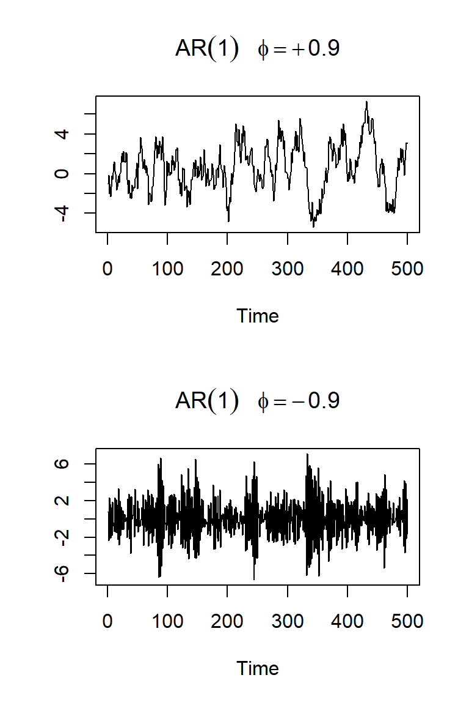
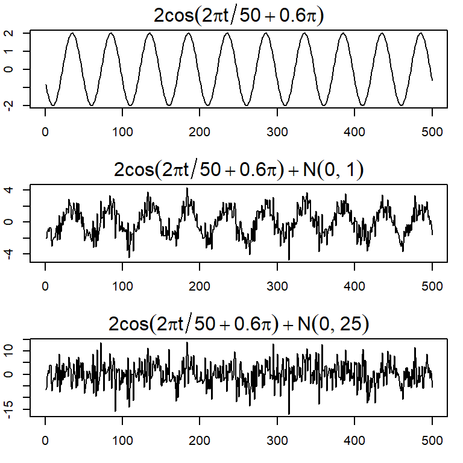

Tema 5: Modelos de series temporales
![]()
Modelos de series temporales
Contenido
Modelos de series temporales
Medidas de dependencia
Procesos estacionarios
Estimación
La función de autocorrelación parcial
Modelos de series temporales
El principal objetivo del análisis de series temporales es construir modelos estadísticos o matemáticos que proporcionan una descripción de los datos muestreados.
Además, sirve para realizar inferencia del comportamiento en el intervalo observado o a futuro.
Considere una serie temporal como una secuencia de variables aleatorias \[X_1,X_2,..,X_t,...\]
Definición: Un proceso estocástico es una familia de variables aleatorias (v.a.) indexada por un conjunto \(\mathcal{T}\), \[\left\lbrace X(t), ~t \in \mathcal{T} \right\rbrace\]
Generalmente:
- \(\mathcal{T}\) puede ser \(\mathbb{R}\), \(\mathbb{Z}\) o \(\mathbb{N}\).
- \(X(t)\) es una v.a. real.
Para cada \(t \in \mathcal{T}\), \(X(t)\) es una v.a. definida sobre \(\Omega\) y
\(X(t)\) es una función de dos argumentos \(X(t,\omega)\), \(t \in \mathcal{T}, \omega \in \Omega\).
Para cada \(\omega \in \Omega\), obtenemos una función de \(t\), o sea, una observación de un proceso estocástico, una realización de un proceso estocástico.
Denotemos por \(X^{(1)}(t), X^{(2)}(t),...\).
Para un \(t\) fijo, se puede visualizar la distribución de \(X(t)\), por medio de alguna técnica estadística como: histograma, cálculo de medias, variancia, etc.
Para \(t_1,t_2,...,t_n\) arbitrarios de \(\mathcal{T}\) y defina la distribución conjunta \[F_{X_{t_1},...,X_{t_n}}(c_{1},...,c_{n} \mid t_1,...,t_n) = P\left(X_{t_1}\leq c_{1}, X_{t_2}\leq c_{2},...,X_{t_n} \leq c_{n} \right).\]
El proceso estocástico \(\left\lbrace X(t), ~t \in \mathcal{T} \right\rbrace\) será especificado si conocemos todas las distribuciones de dimensión finita de todo \(n\geq 1\).
En este caso, se trata de la especificación de un modelo de series temporales.
Por ejemplo,
- Si \(n=1\), conocemos todas las distribuciones unidimensionales,
- Si \(n=2\), conocemos todas las distribuciones bidimensionales,
- …
Ruido blanco
Una colección de variables aleatorias no correlacionadas, \(w_t\), con media \(0\) y variancia \(\sigma_w^2\).
Denotado por \(w_t \sim wn(0,\sigma_w^2)\).
Nota
- Una secuencia de variables aleatorias normales que no están correlacionadas implica que son independientes y tienen una distribución normal conjunta.
- Inversamente no es cierto. En general, variables no correlacionadas (sin asumir normalidad) no necesariamente son independientes.
Medias móviles
¿Qué pasaría si aumento el orden \(k\)?
Sea \(v_t=\frac{1}{m} \sum\limits_{j=-k}^k w_{t+j}\).
\(k=5\)
Autoregresión
Sea \(w_t \sim wn(0,\sigma_w^2)\).
Considere un modelo AR(1): \[X_t=\phi X_{t-1}+w_t\]
Veamos dos realizaciones de \(T=500\) de cada caso: \(\phi=0.9\) y \(-0.9\).

Señal + ruido blanco
Muchos modelos series temporales asumen que existe una señal con alguna variación periódica, contaminada por un ruido aleatorio.
Considere \(x_t=2 \cos \left( 2 \pi \frac{t+15}{50} \right)+ w_t\) para \(t=1,...,500\).
El modelo general es \[x_t = A cos(2\pi \omega t + \phi) + w_t\] con amplitud \(A\), frecuencia \(\omega\), y fase \(\phi\).
El ejemplo anterior considera \(A=2\), \(\omega=1/50\) (un ciclo cada 50 puntos en el tiempo) y \(\phi=2 \pi 15/50=0.6 \pi\).

Medidas de dependencia
Contenido
Modelos de series temporales
Medidas de dependencia
Procesos estacionarios
Estimación
La función de autocorrelación parcial
Medidas de dependencia
- Una descripción completa de un modelo de series temporales es proporcionado por la distribución de probabilidad conjunta, i.e. dados tiempos arbitrarios \(t_1,...,t_n\) para \(n\) entero positivo y \(c_1,...,c_n\) n valores constantes:
\[F_{t_1,...,t_n}(c_1,...,c_n)=P\left(X_1\leq c_1, X_2\leq c_2,...,X_t \leq c_t \right).\]
Aunque esa distribución describe los datos globalmente, en la práctica, esa distribución multidimencional es dificil de conocer, excepto cuando es normal multivariado (¿por qué?)
La distribución marginal en el tiempo \(t\), \[F_t(x)=P(X \leq x).\]
La función densidad marginal en el tiempo \(t\), \[f_t(x)= \frac{\partial F_t(x)}{\partial x}.\]
- La función de media para el tiempo \(t\) es definida por
\[\mu_t= E(X_t)=\int_{-\infty}^\infty x f_t(x)dx.\]
- El ejm de Medias móviles: \(v_t=\frac{1}{3}(w_{t-1}+w_{t}+w_{t+1})\)
\[E(v_t)=\frac{1}{3}\left[E(w_{t-1})+E(w_{t})+E(w_{t+1})\right]=0, \forall t.\]
- El ejm de Señal+ruido: \(x_t=2 \cos \left( 2 \pi \frac{t+15}{50} \right)+ w_t\)
\[E(x_t)=E\left[2 \cos \left( 2 \pi \frac{t+15}{50} \right)\right]+ E(w_t)=2 \cos \left( 2 \pi \frac{t+15}{50} \right).\]
- La función de autocovariancia es definida por
\[\gamma_X(t,s)=\gamma(t,s)= Cov(X_t,X_s)=E\left[ (X_t-\mu_t)(X_s-\mu_s) \right].\]
Mide la dependencia lineal entre dos puntos de tiempo de la misma serie.
La función de variancia en el tiempo \(t\) es definida por \[\gamma_X(t,t)=Var(X_t)\]
El ejm del ruido blanco \(w_t\):
\[ \gamma_w(t,s)=Cov(w_t,w_s)=\left\lbrace \begin{aligned} \sigma_w^2, & & t = s, \\ 0, & & t \neq s. \end{aligned} \right. \]
Propiedad: (Covariancia de combinaciones lineales) Si U y V son combinaciones de variables aleatorias \(X_1,...,X_m\) y \(Y_1,...,Y_r\) con variancias finitas, respectivamente: \[U=\sum_{i=1}^{m} a_i X_i,~\text{y}~~~~~~V=\sum_{j=1}^{r} b_i Y_i.\] Entonces, \[Cov(U,V)=\sum_{i=1}^{m} \sum_{j=1}^{r} a_i b_j Cov(X_i,Y_j).\]
El ejemplo de medias móviles de orden 3: \(v_t=\frac{1}{3}(w_{t-1}+w_{t}+w_{t+1})\). Defina \(s=t+h\). La función de autocovariancia es definida por \(\gamma_v(t,s)=\gamma_v(t,t+h)=Cov(v_{t},v_{t+h})\)
Caso 1 \((h=0)\):
\[\begin{align*} \gamma_v(t, t+0) &= \operatorname{Cov}(v_t, v_{t+0}) = \operatorname{Var}(v_t) \\ &= \frac{1}{9} \operatorname{Var}(w_{t-1} + w_t + w_{t+1}) \\ &= \frac{3}{9} \operatorname{Var}(w_t) = \frac{1}{3} \sigma_w^2. \end{align*}\]
Caso 2 \((h=1)\):
\[\begin{align*} \gamma_v(t, t+1) &= \operatorname{Cov}(v_t, v_{t+1}) \\ &= \operatorname{Cov}\left[ \frac{1}{3}(w_{t-1} + w_t + w_{t+1}),\ \frac{1}{3}(w_t + w_{t+1} + w_{t+2}) \right] \\ &= \frac{1}{9} \left[ \operatorname{Cov}(w_t, w_t) + \operatorname{Cov}(w_{t+1}, w_{t+1}) \right] = \frac{2}{9} \sigma_w^2. \end{align*}\]
Caso 3 \((h=-1)\): Similarmente se obtiene \(\gamma_v(t,t-1)=\frac{2}{9}\sigma_w^2\)
Caso 4 \((h=2~o~h=-2)\):
\[\gamma_v(t,t+2)=\gamma_v(t,t-2)=\frac{1}{9}\sigma_w^2\]
Caso 5 \((h>2~o~h<-2)\):
\[\gamma_v(t,t+h)=0.\]
Entonces, \[\gamma_w(t,t+h)=\left\lbrace \begin{aligned} \frac{3}{9}\sigma_w^2, & & h = 0 \\ \frac{2}{9}\sigma_w^2, & & |h| = 1 \\ \frac{1}{9}\sigma_w^2, & & |h| = 2 \\ 0, & & |h| > 2. \end{aligned} \right.\]
- La función de autocorrelación es definida por
\[\rho_X(t,s)=\frac{\gamma(t,s)}{\sqrt{\gamma(t,t)\gamma(s,s)}}\]
- El ejm del ruido blanco \(w_t\):
\[ \rho_w(t,s)=\left\lbrace \begin{aligned} 1, & & t = s, \\ 0, & & t \neq s. \end{aligned} \right. \]
El ejm de medias móviles: \(v_t=\frac{1}{3}(w_{t-1}+w_{t}+w_{t+1})\)
La función de autocorrelación es dada por: \[ \rho_w(t,t+h)=\left\lbrace \begin{aligned} 1, & & h = 0 \\ \frac{2}{3}, & & |h| = 1 \\ \frac{1}{3}, & & |h| = 2 \\ 0, & & |h| > 2, \end{aligned} \right. \]
- Recuerden el ejmplo de señal: \(x_t=2 \cos \left( 2 \pi \frac{t+15}{50} \right)+ w_t\) para \(t=1,...,500\).
Ejercicio: Calculen la autocovariancia.
Nota
Aunque las medidas teóricas descritas (función de media, variancia, autocovariancia y autocorrelación) son importantes, pero no tenemos herramientas para calcularlas si solamente tenemos una realización del proceso en la práctica.
Se necesita imponer algunas restricciones, como el concepto de estacionariedad.
Procesos estacionarios
Contenido
Modelos de series temporales
Medidas de dependencia
Procesos estacionarios
Estimación
La función de autocorrelación parcial
Procesos estacionarios
Definición: Un proceso estrictamente estacionario es un proceso estocástico cuyo comportamiento de cada colección de valores \[\left\lbrace X_{t_1},X_{t_2},...,X_{t_k} \right\rbrace\] es idéntico a un conjunto bajo un cambio de tiempo \[\left\lbrace X_{t_1+h},X_{t_2+h},...,X_{t_k+h} \right\rbrace.\] Esto es, \[P\left(X_{t_1} \leq c_1,...,X_{t_k} \leq c_k \right)=P\left(X_{t_1+h}\leq c_1,...,X_{t_k+h} \leq c_k \right)\] para todo \(k=1,2,...\), todo tiempo \(t_1,...,t_k\), todos las constantes \(c_1,...,c_k\) y todos los cambios de tiempo \(h=0, \pm 1, \pm 2,...\).
Definición: Un proceso débilmente estacionario es un proceso con variancia finita tal que
la función de la media es constante \[\mu_t=E(X_t)=\mu\]
La función de autocovariancia depende solamente de la diferencia de dos puntos \(t, t+h\) \[\gamma(t,t+h)=Cov(X_t,X_{t+h})=Cov(X_0,X_h):=\gamma(h).\]
Consecuentemente, la función de autocorrelación de un proceso estacionario es definido como
\[\rho(h)=\frac{\gamma(t,t+h)}{\sqrt{\gamma(t+h,t+h)\gamma(t,t)}}=\frac{\gamma(h)}{\gamma(0)}.\]
- En la práctica, se refiere simplemente a un proceso estacionario.
- El ejm del ruido blanco \(w_t\)
\[E(w_t)=0 ~~\text{para todo}~ t\].
\[\gamma_w(t,t+h)=\left\lbrace \begin{aligned} \sigma_w^2, & & h = 0 \\ 0, & & h \neq 0. \end{aligned} \right.\]
Entonces, \(w_t\) es estacionario.
El ejm de medias móviles: \(v_t=\frac{1}{3}(w_{t-1}+w_{t}+w_{t+1})\)
La función de autocovariancia y la f. de autocorrelación están dadas por
\[ \gamma_w(t,t+h)=\left\lbrace \begin{aligned} \frac{3}{9}\sigma_w^2, & & h = 0 \\ \frac{2}{9}\sigma_w^2, & & |h| = 1 \\ \frac{1}{9}\sigma_w^2, & & |h| = 2 \\ 0, & & |h| > 2 \end{aligned} \right. ~~~~,~\text{y}~~~~~\rho_w(t,t+h)=\left\lbrace \begin{aligned} 1, & & h = 0 \\ \frac{2}{3}, & & |h| = 1 \\ \frac{1}{3}, & & |h| = 2 \\ 0, & & |h| > 2. \end{aligned} \right. \]
- Se conculye que \(v_t\) es débilmente estacionario ya que la media es constante y \(\gamma_v(t,t+h)=\gamma_v(h)\) depende solamente de \(h\).
Estimación
Contenido
Modelos de series temporales
Medidas de dependencia
Procesos estacionarios
Estimación
La función de autocorrelación parcial
Estimación
- Aquí en adelante vamos a referir al concepto de estacionariedad débil con solamente estacionariedad.
- Si una serie es estacionaria, la media \(\mu_t=\mu\) es constante y podemos estimarla usando la media muestral
\[\bar{X}=\frac{\sum\limits_{t=1}^T X_t}{T}.\]
Nota
Se puede probar que \[E\left[\bar{X}\right]=\mu~,~~~~\text{y}~~~~Var\left[\bar{X}\right]=\frac{1}{T} \sum_{h=-n}^n \left(1-\frac{|h|}{T} \right) \gamma_X(h).\]
- Para entender la idea de la autocorrelación, recuerde que la estimación de la covariancia y la autocorrelación de una muestra observada de dos variables \(X\) y \(Y\) con una muestra de \(n\) valores es
\[s_{X,Y}=\frac{\sum\limits_{i=1}^{n} (X_{i}-\bar{X})(Y_{i}-\bar{Y})}{n}\] \[r_{X,Y}=\frac{\sum\limits_{i=1}^{n} (X_{i}-\bar{X})(Y_{i}-\bar{Y})}{\sqrt{\sum\limits_{i=1}^{n} (X_{i}-\bar{X})^2 \sum\limits_{i=1}^{n} (Y_{i}-\bar{Y})^2}}\]
- Suponga que tenemos las observaciones \(X_1,...,X_T\) de una serie \(X\), considere la misma serie con un rezago, i.e. \[X_2,...,X_{T-1},X_T\] \[X_1...,X_{T-2},X_{T-1}\]
- Podemos calcular la correlación como si fueran dos variables distintas:
\[r_1=\frac{\sum\limits_{t=1}^{T-1} (X_{t+1}-\bar{X}_1)(X_{t}-\bar{X}_2)}{\sqrt{\sum\limits_{t=1}^{T-1} (X_{t+1}-\bar{X}_1)^2 \sum\limits_{t=1}^{T-1} (X_{t}-\bar{X}_2)^2}}\] donde \(\bar{X}_1\) es la media de los \(T-1\) últimos valores de la serie y \(\bar{X}_2\) es la media de los \(T-1\) primeros valores de la serie.
- Si la serie es estacionaria,
- \(\bar{X}_1\) y \(\bar{X}_2\) pueden ser reemplazadas por \(\bar{X}\).
- El denominador puede ser reemplazado por \(\sum\limits_{t=1}^{T} (X_{t}-\bar{X})^2\).
- Entonces,
\[r_1=\frac{\sum\limits_{t=1}^{T-1} (X_{t+1}-\bar{X})(X_{t}-\bar{X})}{\sum\limits_{t=1}^{T} (X_{t}-\bar{X})^2}\] es la estimación de la autocorrelación de rezago \(h=1\).
- Análogamente se puede calcular la autocorrelación muestral de rezago \(h\) con:
\[r_h=\frac{\sum\limits_{t=1}^{T-h} (X_{t+h}-\bar{X})(X_{t}-\bar{X})}{\sum\limits_{t=1}^{T} (X_{t}-\bar{X})^2}\] para \(h=0,1,2,..., T-1\).
De forma análoga, se define \(r_h=r_{-h}\)
Recuerde que la función de autocorrelación teórica es simétrica:
\[\rho(h)=\rho(-h).\]
Entonces, la función de autocovariancia muestral es definida por \[\hat{\gamma}_X(h)=\frac{1}{T}\sum_{t=1}^{T-h} (X_{t+h}-\bar{X})(X_{t}-\bar{X}),\] con \(\hat{\gamma}_X(-h)=\hat{\gamma}_X(h)\) para \(h=0,1,...,T-1\).
La función de autocorrelación muestral es definida por
\[\begin{align*} \hat{\rho}_X(h) &= r_X(h) = r_h \\ &= \frac{\hat{\gamma}_X(h)}{\hat{\gamma}_X(0)} = \frac{\sum\limits_{t=1}^{T-h} (X_{t+h}-\bar{X})(X_t-\bar{X})} {\sum\limits_{t=1}^{T} (X_t - \bar{X})^2} \end{align*}\]
Propiedad:
Si \(X_t\) tiene sus primeros 4 momentos finitos, y \(X_t\) es ruido blanco, entonces para \(T\) suficientemente grande, la función de autocorrelación muestral \(\hat{\rho}_X(h)=r_h, h=1,2,..., H\) donde \(H\) es un valor entero y fijo, es aproximadamente normal con media cero y desviación estándar \[\sigma_{\hat{\rho}_X(h)}=\frac{1}{\sqrt{T}}.\]
Nota:
- Con este resultado, si se tiene un ruido blanco, entonces se espera que con aproximadamente 95% de confianza, las \(\hat{\rho}_X(h)\) deberían caer dentro del intervalo \(\left( \frac{-2}{\sqrt{T}},\frac{2}{\sqrt{T}} \right)\). puede estimar intervalos de confianza e identificar aquellos rezagos que tienen autocorrelación significativa.
- En la práctica, se grafica los pares ordenados \((h,r_h),h=1,2,...\) para visualizar la función de autocorrelación muestral. Este gráfico se denomina correlograma.
El ejm de ruido blanco:
- Si \(w_t \sim wn(0,\sigma_w^2)\), la función de autocorrelación es
\[\rho_w(t,s)=\left\lbrace \begin{aligned} 1, & & t = s \\ 0, & & t \neq s, \end{aligned} \right.\] o \[\rho_w(h)=\left\lbrace \begin{aligned} 1, & & h = 0 \\ 0, & & h \neq 0, \end{aligned} \right.\]
El ejm de medias móviles:
- Sea \(v_t=\frac{1}{3}(w_{t-1}+w_{t}+w_{t+1})\)
La función de autocorrelación es \[ \rho_v(h)=\left\lbrace \begin{aligned} 1, & & h = 0 \\ \frac{2}{3}, & & |h| = 1 \\ \frac{1}{3}, & & |h| = 2 \\ 0, & & |h| > 2, \end{aligned} \right. \]
Ejemplos: sorteo navideño de 2008
- Ejemplo 5.1 de Hernández (2011): 135 números del sorteo de la lotería de Naividad de 2008 según el orden de extracción. Los números son muestreados aleatoriamente con reemplazo de una distribución uniforme discreta enteros entre 0 y 99.
Ejemplos: pasajeros
La base de datos “AirPassenger” en R proporciona total de pasajeros mensuales de una aerolínea estadounidense de 1949 a 1960.
¿La serie es estacionaria?
Ejemplos: contrayentes
Ejemplo 2.1 de Hernández (2011): Serie de número de contrayentes en los matrimonios celebrados en Costa Rica de 1978 a 1983.
¿La serie es estacionaria?
Ejemplos: graduados del ITCR
- Ejemplo 3.2 de Hernández (2011): Serie de graduados del ITCR de 1975-2002.
¿La serie es estacionaria?
Observaciones sobre el comportamiento de las series estacionarias
Generalmente en la práctica, las series estacionarias presentan las siguientes características:
- Una media o nivel constante a lo largo del tiempo
- Una variabilidad constante en el tiempo (con pequeñas variaciones)
- Su función de autocorrelación generalmente decae rápidamente.
¡pero podría tener algunas excepciones!
Transform. y diferenciación de series
En la práctica, la mayoría de las series no son estacionarias.
Si la variancia cambia con el nivel de la serie, se recomienda usar \[W_t=\ln X_t.\]
En general, la transformación de Box-Cox se puede usar
\[\begin{equation} W_t = \begin{cases} \log(X_t), & \text{si } \lambda = 0 \\ \frac{\operatorname{signo}(X_t)\, |X_t|^{\lambda - 1}}{\lambda}, & \text{otros casos}. \end{cases} \end{equation}\]
- Otra transformación útil es la diferenciación de la serie: \[W_t=\nabla X_t = X_t-X_{t-1},~~t=2,...,T.\]
- Ejemplo 3.2 de Hernández (2011): Serie de graduados del ITCR de 1975-2002.
- Ejemplo del valor de cierre de Google (25/02/2013-13/02/2017)
Caminata aleatoria
- Si una serie diferenciada resulta ser un ruido blanco \(\epsilon_t\),
\[W_t=\nabla X_t = X_t-X_{t-1}= \epsilon_t,\] entonces reordenando se tiene un modelo de caminata aleatoria: \[X_t= X_{t-1} + \epsilon_t\]
Un modelo no estacionario ampliamente utilizado en datos económicos y financieros.
Presenta tendencias crecientes y decrecientes imprevistas a lo largo del tiempo.
La función de autocorrelación parcial
Contenido
Modelos de series temporales
Medidas de dependencia
Procesos estacionarios
Estimación
La función de autocorrelación parcial
La función de autocorrelación parcial
- La autocorrelación parcial (f.a.c.p.) en el rezago \(h\) mide el grado de asociación lineal entre \(Z_t\) y \(Z_{t+h}\) cuando los efectos de los otros rezagos \(1,2,...,h-1\) han sido eliminados.
- Denotemos la función de autocorrelación parcial teórica de orden \(h\) por \(\rho_{hh}\) para \(h=1,2,...\) y la función de autocorrelación parcial muestral de orden \(h\) con \(r_{hh}\), para \(h=1,2,...\).
- Teóricamente la función de autocorrelación parcial de un proceso estacionario \(Z_t\), denotado por \(\rho_{hh}\), para \(h=1,2,...\) es \[\rho_{11}=corr(Z_{t+1},Z_t)=\rho_1\] \[\text{y}~~ \rho_{hh}=corr\left[Z_{t+h}-\hat{Z}_{t+h}~,~Z_t-\hat{Z}_{t}\right],~~\text{para}~~ h \geq 2,\] donde
\(\hat{Z}_{t+h}=\beta_1 Z_{t+h-1}+\beta_2 Z_{t+h-2}+...+\beta_{h-1} Z_{t+1}\) y
\(\hat{Z}_{t}=\beta_1 Z_{t+1}+\beta_2 Z_{t+2}+...+\beta_{h-1} Z_{t+h-1}\)
- Si \(Z_t\) es un proceso gaussiano,
\[\rho_{hh}=corr(Z_{t+h},Z_t|Z_{t+1},...,Z_{t+h-1}).\]
i.e. es la correlación de una distribución normal bivariada \((Z_{t+h},Z_t)\) condicional a \({Z_{t+1},...,Z_{t+h-1}}\) (¿Por qué?)